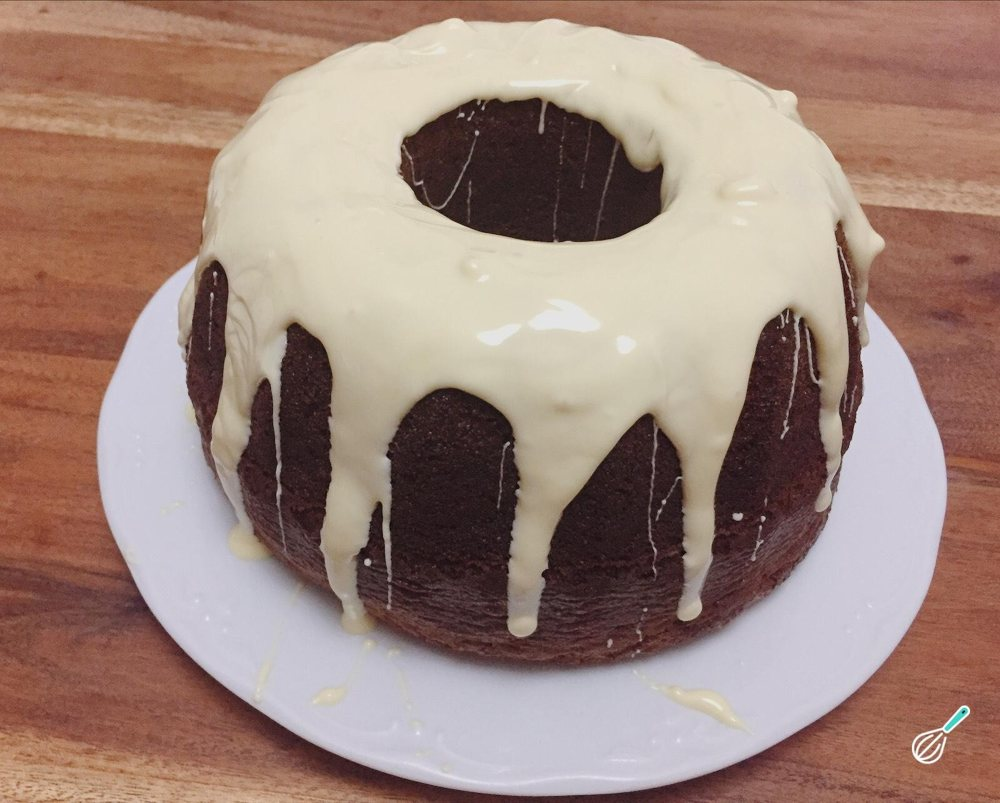

Doces · Tortas e bolos
Bolo de chocolate

Ingredientes
- Massa: 50 g de chocolate amargo picado
- ¾ xícara de manteiga
- 1 ½ xícara de açúcar
- 3 ovos
- 1 colher (chá) de essência de baunilha
- 2 xícaras de farinha de trigo
- 2 colheres (chá) de fermento em pó
- ½ colher (chá) de sal
- ¾ xícara de leite
- Calda: 1 colher (sopa) de manteiga
- 1 xícara de açúcar
- ½ xícara de chocolate em pó
- ¼ xícara de leite
- 120 g de chocolate branco picado para decorar
Modo de preparo
- Ponha o chocolate numa panela e leve ao fogo em banho-maria até derreter. Retire e bata um pouco com uma colher de pau, até ficar liso. Reserve.
- Ponha a manteiga e o açúcar numa tigela grande e misture vigorosamente com uma colher de pau até a mistura ficar cremosa.
- Vá juntando os ovos, um de cada vez, sem parar de mexer.
- Acrescente a baunilha e o chocolate derretido e misture bem.
- Peneire a farinha juntamente com o fermento e o sal, e vá acrescentando à mistura, alternando com o leite até obter uma massa homogênea.
- Preaqueça o forno em temperatura média (180 °C). Unte com manteiga uma fôrma de buraco no meio, com 26 cm de diâmetro. Coloque a massa na fôrma e leve ao forno preaquecido para assar até o bolo ficar firme.
- Retire do forno, deixe descansar por 10 minutos e desenforme num prato. Deixe esfriar completamente.
- Enquanto isso, prepare a calda: numa panela, derreta a manteiga e acrescente o açúcar, o chocolate em pó e o leite. Misture bem e cozinhe em fogo brando mexendo sempre. Retire do fogo e espalhe sobre o bolo já frio.
- Coloque o chocolate branco picado numa panela e leve ao fogo em banho-maria até derreter. Retire do fogo e bata com uma colher de pau até formar um creme liso e homogêneo. Despeje sobre o bolo, deixe esfriar e congele.
Observação
Para o bolo ficar com uma decoração atraente, retire colheradas do chocolate branco derretido e deixe escorrer em fio sobre o bolo, formando uma espécie de rede. Congelamento: cubra o bolo com plástico e leve ao freezer até congelar; retire-o do prato, passe para um saco plástico e congele. Descongelamento: em temperatura ambiente por 2 horas.